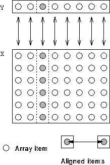

Can align one or more dimensions with a single element.
!HPF$ ALIGN (*,:) WITH Y(:) :: X
The * on the LHS of the WITH keyword, means that columns of X are not distributed. Each element of Y is aligned with a column of X. X is said to be collapsed in the first dimension. See Figure 30.

Figure 30: Visualisation of Collapsing a Dimension
Collapsing dimensions is useful for certain reference patterns, for example if a whole row or column is used in the calculation of a single element. The * distribution method allows for dimensions to be collapsed, but this can also be achieved during alignment.
The general rule is: if a * appears in the align-source-list (the parenthesised list on the LHS of the WITH clause associated with the alignee) then the corresponding dimension is collapsed. (I like to think of it as aligning all dimensions that contain a colon; the * dimensions are left over so are collapsed.)
In the example, the * is in the first dimension meaning that the first dimension of X is not distributed. The whole of the first column of X is aligned with the first element of Y, the whole of the second column of X is aligned with the second column of Y, and so on. The processor which received Y(i) will also receive X(:,i).
There must be the same number of non-* dimensions on either side of the WITH clause.